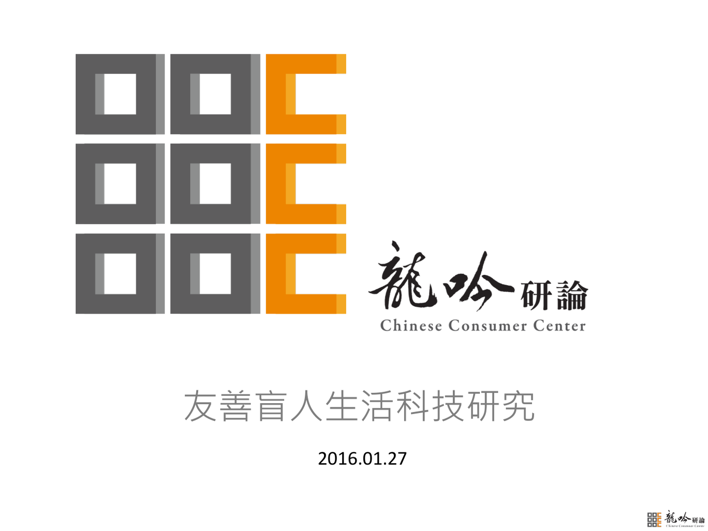

Posted by Zen 育涓 張 · Feb 25, 2016 at 3:21 AM [檔案分享] 01/27 龍吟研究簡報 ** 檔案僅供研究室成員閱讀，請勿外流＊＊＊  20160127-友善盲人生活科技研究-台科大.pdf 2.19 MB • Download 居家物聯：智慧連結，串物也連心∣龍吟研論黃競樺研究經理巨趨勢：預約兩岸華人的幸福未來 ∣龍吟研論別蓮蒂執行總監 微趨勢：台灣近年來生活型態演變 ∣東方線上蔡鴻賢執行長 微趨勢專題：從社群大數據看幸福演化 ∣意藍科技楊立偉董事總經理 健康管理：健康管理價值1+3∣龍吟研論李竺姮營運總監